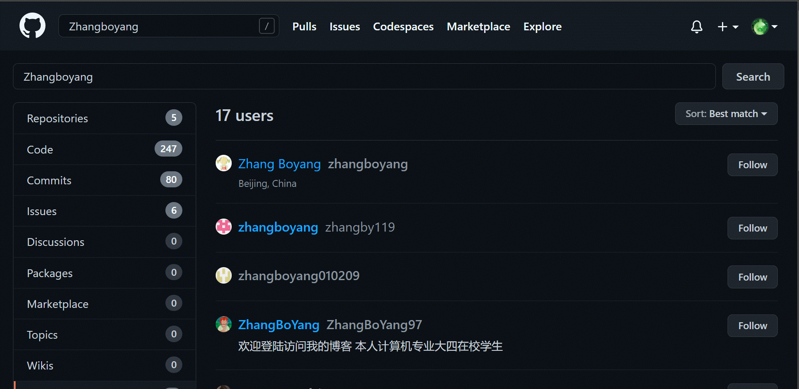

| 时空坐标 |
| 过去事件 |
| 时间 | 事件 |
|---|---|
| 2022 年 11月 16日 |
今天，张博洋的网站正式创建 网址： https://zhangboyaung.github.io/ 由GitHub托管 |
| 2022 年 11月 17日 |
呼和浩特 今天仍在隔离 风吹草低见有阳 形式正在好转 没想到GitHub上还有17个叫张博洋（zhangboyang）的用户  |
| 时间 | 事件 |
|---|---|
| 2022 年 9月 27日 |
呼和浩特经济技术开发区党工委原书记李建平案一审宣判：死刑 |
| 2022 年 11月 13日 |
赛斯基因科技有限公司核酸检测结果造假 |
📭邮箱：youhulu2021@outlook.com
张博洋的GitHub： https://github.com/ZhangBoYaung